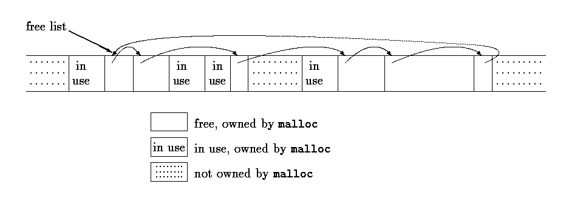
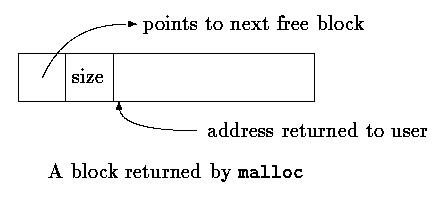

Back to Chapter 7 -- Index -- Appendix A
This chapter is divided into three major parts: input/output, file system, and storage allocation. The first two parts assume a modest familiarity with the external characteristics of UNIX systems.
Chapter 7 was concerned with an input/output interface that is uniform across operating systems. On any particular system the routines of the standard library have to be written in terms of the facilities provided by the host system. In the next few sections we will describe the UNIX system calls for input and output, and show how parts of the standard library can be implemented with them.
In the most general case, before you read and write a file, you must inform the system of your intent to do so, a process called opening the file. If you are going to write on a file it may also be necessary to create it or to discard its previous contents. The system checks your right to do so (Does the file exist? Do you have permission to access it?) and if all is well, returns to the program a small non-negative integer called a file descriptor. Whenever input or output is to be done on the file, the file descriptor is used instead of the name to identify the file. (A file descriptor is analogous to the file pointer used by the standard library, or to the file handle of MS-DOS.) All information about an open file is maintained by the system; the user program refers to the file only by the file descriptor.
Since input and output involving keyboard and screen is so common, special arrangements exist to make this convenient. When the command interpreter (the ``shell'') runs a program, three files are open, with file descriptors 0, 1, and 2, called the standard input, the standard output, and the standard error. If a program reads 0 and writes 1 and 2, it can do input and output without worrying about opening files.
The user of a program can redirect I/O to and from files with < and >:
$ prog <infile >outfileIn this case, the shell changes the default assignments for the file descriptors 0 and 1 to the named files. Normally file descriptor 2 remains attached to the screen, so error messages can go there. Similar observations hold for input or output associated with a pipe. In all cases, the file assignments are changed by the shell, not by the program. The program does not know where its input comes from nor where its output goes, so long as it uses file 0 for input and 1 and 2 for output.
int n_read = read(int fd, char *buf, int n); int n_written = write(int fd, char *buf, int n);Each call returns a count of the number of bytes transferred. On reading, the number of bytes returned may be less than the number requested. A return value of zero bytes implies end of file, and -1 indicates an error of some sort. For writing, the return value is the number of bytes written; an error has occurred if this isn't equal to the number requested.
Any number of bytes can be read or written in one call. The most common values are 1, which means one character at a time (``unbuffered''), and a number like 1024 or 4096 that corresponds to a physical block size on a peripheral device. Larger sizes will be more efficient because fewer system calls will be made.
Putting these facts together, we can write a simple program to copy its input to its output, the equivalent of the file copying program written for Chapter 1. This program will copy anything to anything, since the input and output can be redirected to any file or device.
#include "syscalls.h"
int main(void) /* copy input to output */
{
char buf[BUFSIZ];
int n;
while ((n = read(0, buf, BUFSIZ)) > 0)
write(1, buf, n);
return 0;
}
We have collected function prototypes for the system calls into a file called
syscalls.h so we can include it in the programs of this chapter.
This name is not standard, however.
The parameter BUFSIZ is also defined in syscalls.h; its value is a good size for the local system. If the file size is not a multiple of BUFSIZ, some read will return a smaller number of bytes to be written by write; the next call to read after that will return zero.
It is instructive to see how read and write can be used to construct higher-level routines like getchar, putchar, etc. For example, here is a version of getchar that does unbuffered input, by reading the standard input one character at a time.
#include "syscalls.h"
/* getchar: unbuffered single character input */
int getchar(void)
{
char c;
return (read(0, &c, 1) == 1) ? (unsigned char) c : EOF;
}
c must be a char, because read needs a character pointer. Casting c to unsigned char in the return statement eliminates any problem of sign extension.
为了弄清楚 char 的符号位影响，请参考下面的小程序：
/**
* char may default to signed char.
* 0xFF is -1 for signed char, 255 for unsigned char.
* Cast as unsigned char before assigning char to int.
*/
#include <stdio.h>
int main(void)
{
char c = 0xFF;
int i;
int j;
i = c;
j = (unsigned char) c;
printf("%d, %d\n", i, j);
return 0;
}
The second version of getchar does input in big chunks, and hands out the characters one at a time.
#include "syscalls.h"
/* getchar: simple buffered version */
int getchar(void)
{
static char buf[BUFSIZ];
static char *bufp = buf;
static int n = 0;
if (n == 0) { /* buffer is empty */
n = read(0, buf, sizeof buf);
bufp = buf;
}
return (--n >= 0) ? (unsigned char) *bufp++ : EOF;
}
If these versions of getchar were to be compiled with <stdio.h>
included, it would be necessary to #undef the name getchar in
case it is implemented as a macro.
open is rather like the fopen discussed in Chapter 7, except that instead of returning a file pointer, it returns a file descriptor, which is just an int. open returns -1 if any error occurs.
#include <fcntl.h> int fd; int open(char *name, int flags, int perms); fd = open(name, flags, perms);As with fopen, the name argument is a character string containing the filename. The second argument, flags, is an int that specifies how the file is to be opened; the main values are
| O_RDONLY | open for reading only |
| O_WRONLY | open for writing only |
| O_RDWR | open for both reading and writing |
These constants are defined in <fcntl.h> on System V UNIX systems, and in <sys/file.h> on Berkeley (BSD) versions.
To open an existing file for reading,
fd = open(name, O_RDONLY, 0);The perms argument is always zero for the uses of open that we will discuss.
It is an error to try to open a file that does not exist. The system call creat is provided to create new files, or to re-write old ones.
int creat(char *name, int perms); fd = creat(name, perms);returns a file descriptor if it was able to create the file, and -1 if not. If the file already exists, creat will truncate it to zero length, thereby discarding its previous contents; it is not an error to creat a file that already exists.
If the file does not already exist, creat creates it with the permissions specified by the perms argument. In the UNIX file system, there are nine bits of permission information associated with a file that control read, write and execute access for the owner of the file, for the owner's group, and for all others. Thus a three-digit octal number is convenient for specifying the permissions. For example, 0775 specifies read, write and execute permission for the owner, and read and execute permission for the group and everyone else.
To illustrate, here is a simplified version of the UNIX program cp, which copies one file to another. Our version copies only one file, it does not permit the second argument to be a directory, and it invents permissions instead of copying them.
#include <stdio.h>
#include <fcntl.h>
#include "syscalls.h"
#define PERMS 0666 /* RW for owner, group, others */
void error(char *, ...);
/* cp: copy f1 to f2 */
int main(int argc, char *argv[])
{
int f1, f2, n;
char buf[BUFSIZ];
if (argc != 3)
error("Usage: cp from to");
if ((f1 = open(argv[1], O_RDONLY, 0)) == -1)
error("cp: can't open %s", argv[1]);
if ((f2 = creat(argv[2], PERMS)) == -1)
error("cp: can't create %s, mode %03o",
argv[2], PERMS);
while ((n = read(f1, buf, BUFSIZ)) > 0)
if (write(f2, buf, n) != n)
error("cp: write error on file %s", argv[2]);
return 0;
}
This program creates the output file with fixed permissions of 0666.
With the stat system call, described in Section 8.6,
we can determine the mode of an existing file and thus give the same mode to
the copy.
Notice that the function error is called with variable argument lists much like printf. The implementation of error illustrates how to use another member of the printf family. The standard library function vprintf is like printf except that the variable argument list is replaced by a single argument that has been initialized by calling the va_start macro. Similarly, vfprintf and vsprintf match fprintf and sprintf.
#include <stdio.h>
#include <stdarg.h>
/* error: print an error message and die */
void error(char *fmt, ...)
{
va_list args;
va_start(args, fmt);
fprintf(stderr, "error: ");
vprintf(stderr, fmt, args);
fprintf(stderr, "\n");
va_end(args);
exit(1);
}
There is a limit (often about 20) on the number of files that a program may open simultaneously. Accordingly, any program that intends to process many files must be prepared to re-use file descriptors. The function close(int fd) breaks the connection between a file descriptor and an open file, and frees the file descriptor for use with some other file; it corresponds to fclose in the standard library except that there is no buffer to flush. Termination of a program via exit or return from the main program closes all open files.
现代的操作系统中，文件打开数默认都应该比较大。20 可以算是老黄历了，例如 DOS 和 SCO/UNIX 年代大约就是这样的水平。在 Windows 中，各种用户对象和内核对象的数目也是允许一个很大的数值的。在 Linux 下，可以采用：ulimit 命令来查看和设置该参数的值。例如：
# Check all of the limits.
[zedware@fedora11 ~]$ ulimit -a
core file size (blocks, -c) 0
data seg size (kbytes, -d) unlimited
scheduling priority (-e) 0
file size (blocks, -f) unlimited
pending signals (-i) 6144
max locked memory (kbytes, -l) 64
max memory size (kbytes, -m) unlimited
open files (-n) 1024
pipe size (512 bytes, -p) 8
POSIX message queues (bytes, -q) 819200
real-time priority (-r) 0
stack size (kbytes, -s) 10240
cpu time (seconds, -t) unlimited
max user processes (-u) 1024
virtual memory (kbytes, -v) unlimited
file locks (-x) unlimited
# Set open files to 10.
[zedware@fedora11 ~]$ ulimit -n 10
# Check open files again.
[zedware@fedora11 ~]$ ulimit -n
10
The function unlink(char *name) removes the file name from the file system. It corresponds to the standard library function remove.
Exercise 8-1. Rewrite the program cat from Chapter 7 using read, write, open, and close instead of their standard library equivalents. Perform experiments to determine the relative speeds of the two versions.
long lseek(int fd, long offset, int origin);
sets the current position in the file whose descriptor is fd to offset, which is taken relative to the location specified by origin. Subsequent reading or writing will begin at that position. origin can be 0, 1, or 2 to specify that offset is to be measured from the beginning, from the current position, or from the end of the file respectively. For example, to append to a file (the redirection >> in the UNIX shell, or "a" for fopen), seek to the end before writing:
lseek(fd, 0L, 2);To get back to the beginning (``rewind''),
lseek(fd, 0L, 0);
Notice the 0L argument; it could also be written as (long) 0 or just as 0 if lseek is properly declared.
注意，现代的操作操作系统有一些细节的改进。例如：man lseek 在 Fedora Core 11 上给出的原型为：
LSEEK(2) Linux Programmer’s Manual LSEEK(2)
NAME
lseek - reposition read/write file offset
SYNOPSIS
#include <sys/types.h>
#include <unistd.h>
off_t lseek(int fd, off_t offset, int whence);
With lseek, it is possible to treat files more or less like arrays, at the price of slower access. For example, the following function reads any number of bytes from any arbitrary place in a file. It returns the number read, or -1 on error.
#include "syscalls.h"
/*get: read n bytes from position pos */
int get(int fd, long pos, char *buf, int n)
{
if (lseek(fd, pos, 0) >= 0) /* get to pos */
return read(fd, buf, n);
else
return -1;
}
The return value from lseek is a long that gives the new position in
the file, or -1 if an error occurs. The standard library function
fseek is similar to lseek except that the first argument is
a FILE * and the return is non-zero if an error occurred.
Recall that files in the standard library are described by file pointers rather than file descriptors. A file pointer is a pointer to a structure that contains several pieces of information about the file: a pointer to a buffer, so the file can be read in large chunks; a count of the number of characters left in the buffer; a pointer to the next character position in the buffer; the file descriptor; and flags describing read/write mode, error status, etc.
The data structure that describes a file is contained in <stdio.h>, which must be included (by #include) in any source file that uses routines from the standard input/output library. It is also included by functions in that library. In the following excerpt from a typical <stdio.h>, names that are intended for use only by functions of the library begin with an underscore so they are less likely to collide with names in a user's program. This convention is used by all standard library routines.
#define NULL 0
#define EOF (-1)
#define BUFSIZ 1024
#define OPEN_MAX 20 /* max #files open at once */
typedef struct _iobuf {
int cnt; /* characters left */
char *ptr; /* next character position */
char *base; /* location of buffer */
int flag; /* mode of file access */
int fd; /* file descriptor */
} FILE;
extern FILE _iob[OPEN_MAX];
#define stdin (&_iob[0])
#define stdout (&_iob[1])
#define stderr (&_iob[2])
enum _flags {
_READ = 01, /* file open for reading */
_WRITE = 02, /* file open for writing */
_UNBUF = 04, /* file is unbuffered */
_EOF = 010, /* EOF has occurred on this file */
_ERR = 020 /* error occurred on this file */
};
int _fillbuf(FILE *);
int _flushbuf(int, FILE *);
#define feof(p) ((p)->flag & _EOF) != 0)
#define ferror(p) ((p)->flag & _ERR) != 0)
#define fileno(p) ((p)->fd)
#define getc(p) (--(p)->cnt >= 0 \
? (unsigned char) *(p)->ptr++ : _fillbuf(p))
#define putc(x,p) (--(p)->cnt >= 0 \
? *(p)->ptr++ = (x) : _flushbuf((x),p))
#define getchar() getc(stdin)
#define putcher(x) putc((x), stdout)
The getc macro normally decrements the count, advances the pointer, and
returns the character. (Recall that a long #define is continued with a
backslash.) If the count goes negative, however, getc calls the function
_fillbuf to replenish the buffer, re-initialize the structure contents,
and return a character. The characters are returned unsigned, which
ensures that all characters will be positive.
Although we will not discuss any details, we have included the definition of putc to show that it operates in much the same way as getc, calling a function _flushbuf when its buffer is full. We have also included macros for accessing the error and end-of-file status and the file descriptor.
The function fopen can now be written. Most of fopen is concerned with getting the file opened and positioned at the right place, and setting the flag bits to indicate the proper state. fopen does not allocate any buffer space; this is done by _fillbuf when the file is first read.
#include <fcntl.h>
#include "syscalls.h"
#define PERMS 0666 /* RW for owner, group, others */
FILE *fopen(char *name, char *mode)
{
int fd;
FILE *fp;
if (*mode != 'r' && *mode != 'w' && *mode != 'a')
return NULL;
for (fp = _iob; fp < _iob + OPEN_MAX; fp++)
if ((fp->flag & (_READ | _WRITE)) == 0)
break; /* found free slot */
if (fp >= _iob + OPEN_MAX) /* no free slots */
return NULL;
if (*mode == 'w')
fd = creat(name, PERMS);
else if (*mode == 'a') {
if ((fd = open(name, O_WRONLY, 0)) == -1)
fd = creat(name, PERMS);
lseek(fd, 0L, 2);
} else
fd = open(name, O_RDONLY, 0);
if (fd == -1) /* couldn't access name */
return NULL;
fp->fd = fd;
fp->cnt = 0;
fp->base = NULL;
fp->flag = (*mode == 'r') ? _READ : _WRITE;
return fp;
}
This version of fopen does not handle all of the access mode
possibilities of the standard, though adding them would not take much code.
In particular, our fopen does not recognize the ``b'' that
signals binary access, since that is meaningless on UNIX systems, nor the
``+'' that permits both reading and writing.
The first call to getc for a particular file finds a count of zero, which forces a call of _fillbuf. If _fillbuf finds that the file is not open for reading, it returns EOF immediately. Otherwise, it tries to allocate a buffer (if reading is to be buffered).
Once the buffer is established, _fillbuf calls read to fill it, sets the count and pointers, and returns the character at the beginning of the buffer. Subsequent calls to _fillbuf will find a buffer allocated.
#include "syscalls.h"
/* _fillbuf: allocate and fill input buffer */
int _fillbuf(FILE *fp)
{
int bufsize;
if ((fp->flag&(_READ|_EOF_ERR)) != _READ)
return EOF;
bufsize = (fp->flag & _UNBUF) ? 1 : BUFSIZ;
if (fp->base == NULL) /* no buffer yet */
if ((fp->base = (char *) malloc(bufsize)) == NULL)
return EOF; /* can't get buffer */
fp->ptr = fp->base;
fp->cnt = read(fp->fd, fp->ptr, bufsize);
if (--fp->cnt < 0) {
if (fp->cnt == -1)
fp->flag |= _EOF;
else
fp->flag |= _ERR;
fp->cnt = 0;
return EOF;
}
return (unsigned char) *fp->ptr++;
}
The only remaining loose end is how everything gets started. The array
_iob must be defined and initialized for stdin,
stdout and stderr:
FILE _iob[OPEN_MAX] = { /* stdin, stdout, stderr */
{ 0, (char *) 0, (char *) 0, _READ, 0 },
{ 0, (char *) 0, (char *) 0, _WRITE, 1 },
{ 0, (char *) 0, (char *) 0, _WRITE, | _UNBUF, 2 }
};
The initialization of the flag part of the structure shows that
stdin is to be read, stdout is to be written, and
stderr is to be written unbuffered.
Exercise 8-2. Rewrite fopen and _fillbuf with fields instead of explicit bit operations. Compare code size and execution speed.
Exercise 8-3. Design and write _flushbuf, fflush, and fclose.
Exercise 8-4. The standard library function
int fseek(FILE *fp, long offset, int origin)is identical to lseek except that fp is a file pointer instead of a file descriptor and return value is an int status, not a position. Write fseek. Make sure that your fseek coordinates properly with the buffering done for the other functions of the library.
Since a UNIX directory is just a file, ls need only read it to retrieve the filenames. But is is necessary to use a system call to access other information about a file, such as its size. On other systems, a system call may be needed even to access filenames; this is the case on MS-DOS for instance. What we want is provide access to the information in a relatively system-independent way, even though the implementation may be highly system-dependent.
We will illustrate some of this by writing a program called fsize. fsize is a special form of ls that prints the sizes of all files named in its commandline argument list. If one of the files is a directory, fsize applies itself recursively to that directory. If there are no arguments at all, it processes the current directory.
Let us begin with a short review of UNIX file system structure. A directory is a file that contains a list of filenames and some indication of where they are located. The ``location'' is an index into another table called the ``inode list.'' The inode for a file is where all information about the file except its name is kept. A directory entry generally consists of only two items, the filename and an inode number.
Regrettably, the format and precise contents of a directory are not the same on all versions of the system. So we will divide the task into two pieces to try to isolate the non-portable parts. The outer level defines a structure called a Dirent and three routines opendir, readdir, and closedir to provide system-independent access to the name and inode number in a directory entry. We will write fsize with this interface. Then we will show how to implement these on systems that use the same directory structure as Version 7 and System V UNIX; variants are left as exercises.
The Dirent structure contains the inode number and the name. The maximum length of a filename component is NAME_MAX, which is a system-dependent value. opendir returns a pointer to a structure called DIR, analogous to FILE, which is used by readdir and closedir. This information is collected into a file called dirent.h.
#define NAME_MAX 14 /* longest filename component; */
/* system-dependent */
typedef struct { /* portable directory entry */
long ino; /* inode number */
char name[NAME_MAX+1]; /* name + '\0' terminator */
} Dirent;
typedef struct { /* minimal DIR: no buffering, etc. */
int fd; /* file descriptor for the directory */
Dirent d; /* the directory entry */
} DIR;
DIR *opendir(char *dirname);
Dirent *readdir(DIR *dfd);
void closedir(DIR *dfd);
The system call stat takes a filename and returns all of the
information in the inode for that file, or -1 if there is an error.
That is,
char *name; struct stat stbuf; int stat(char *, struct stat *); stat(name, &stbuf);fills the structure stbuf with the inode information for the file name. The structure describing the value returned by stat is in <sys/stat.h>, and typically looks like this:
struct stat /* inode information returned by stat */
{
dev_t st_dev; /* device of inode */
ino_t st_ino; /* inode number */
short st_mode; /* mode bits */
short st_nlink; /* number of links to file */
short st_uid; /* owners user id */
short st_gid; /* owners group id */
dev_t st_rdev; /* for special files */
off_t st_size; /* file size in characters */
time_t st_atime; /* time last accessed */
time_t st_mtime; /* time last modified */
time_t st_ctime; /* time originally created */
};
Most of these values are explained by the comment fields. The types like
dev_t and ino_t are defined in <sys/types.h>, which
must be included too.
The st_mode entry contains a set of flags describing the file. The flag definitions are also included in <sys/types.h>; we need only the part that deals with file type:
#define S_IFMT 0160000 /* type of file: */ #define S_IFDIR 0040000 /* directory */ #define S_IFCHR 0020000 /* character special */ #define S_IFBLK 0060000 /* block special */ #define S_IFREG 0010000 /* regular */ /* ... */Now we are ready to write the program fsize. If the mode obtained from stat indicates that a file is not a directory, then the size is at hand and can be printed directly. If the name is a directory, however, then we have to process that directory one file at a time; it may in turn contain sub-directories, so the process is recursive.
The main routine deals with command-line arguments; it hands each argument to the function fsize.
#include <stdio.h>
#include <string.h>
#include "syscalls.h"
#include <fcntl.h> /* flags for read and write */
#include <sys/types.h> /* typedefs */
#include <sys/stat.h> /* structure returned by stat */
#include "dirent.h"
void fsize(char *);
/* print file name */
int main(int argc, char **argv)
{
if (argc == 1) /* default: current directory */
fsize(".");
else
while (--argc > 0)
fsize(*++argv);
return 0;
}
The function fsize prints the size of the file. If the file is a
directory, however, fsize first calls dirwalk to handle all
the files in it. Note how the flag names S_IFMT and S_IFDIR
are used to decide if the file is a directory. Parenthesization matters,
because the precedence of & is lower than that of ==.
int stat(char *, struct stat *); void dirwalk(char *, void (*fcn)(char *));The function dirwalk is a general routine that applies a function to each file in a directory. It opens the directory, loops through the files in it, calling the function on each, then closes the directory and returns. Since fsize calls dirwalk on each directory, the two functions call each other recursively.
/* fsize: print the name of file "name" */ void fsize(char *name) { struct stat stbuf; if (stat(name, &stbuf) == -1) { fprintf(stderr, "fsize: can't access %s\n", name); return; } if ((stbuf.st_mode & S_IFMT) == S_IFDIR) dirwalk(name, fsize); printf("%8ld %s\n", stbuf.st_size, name); }
#define MAX_PATH 1024Each call to readdir returns a pointer to information for the next file, or NULL when there are no files left. Each directory always contains entries for itself, called ".", and its parent, ".."; these must be skipped, or the program will loop forever.
/* dirwalk: apply fcn to all files in dir */ void dirwalk(char *dir, void (*fcn)(char *)) { char name[MAX_PATH]; Dirent *dp; DIR *dfd; if ((dfd = opendir(dir)) == NULL) { fprintf(stderr, "dirwalk: can't open %s\n", dir); return; } while ((dp = readdir(dfd)) != NULL) { if (strcmp(dp->name, ".") == 0 || strcmp(dp->name, "..")) continue; /* skip self and parent */ if (strlen(dir) + strlen(dp->name) + 2 > sizeof(name)) fprintf(stderr, "dirwalk: name %s %s too long\n", dir, dp->name); else { sprintf(name, "%s/%s", dir, dp->name); (*fcn)(name); } } closedir(dfd); }
Down to this last level, the code is independent of how directories are formatted. The next step is to present minimal versions of opendir, readdir, and closedir for a specific system. The following routines are for Version 7 and System V UNIX systems; they use the directory information in the header <sys/dir.h>, which looks like this:
#ifndef DIRSIZ #define DIRSIZ 14 #endifSome versions of the system permit much longer names and have a more complicated directory structure.
struct direct { /* directory entry */ ino_t d_ino; /* inode number */ char d_name[DIRSIZ]; /* long name does not have '\0' */ };
The type ino_t is a typedef that describes the index into the inode list. It happens to be unsigned short on the systems we use regularly, but this is not the sort of information to embed in a program; it might be different on a different system, so the typedef is better. A complete set of ``system'' types is found in <sys/types.h>.
opendir opens the directory, verifies that the file is a directory (this time by the system call fstat, which is like stat except that it applies to a file descriptor), allocates a directory structure, and records the information:
int fstat(int fd, struct stat *);closedir closes the directory file and frees the space:
/* opendir: open a directory for readdir calls */ DIR *opendir(char *dirname) { int fd; struct stat stbuf; DIR *dp; if ((fd = open(dirname, O_RDONLY, 0)) == -1 || fstat(fd, &stbuf) == -1 || (stbuf.st_mode & S_IFMT) != S_IFDIR || (dp = (DIR *) malloc(sizeof(DIR))) == NULL) return NULL; dp->fd = fd; return dp; }
/* closedir: close directory opened by opendir */
void closedir(DIR *dp)
{
if (dp) {
close(dp->fd);
free(dp);
}
}
Finally, readdir uses read to read each directory entry. If a
directory slot is not currently in use (because a file has been removed), the
inode number is zero, and this position is skipped. Otherwise, the inode
number and name are placed in a static structure and a pointer to that
is returned to the user. Each call overwrites the information from the
previous one.
#include <sys/dir.h> /* local directory structure */
/* readdir: read directory entries in sequence */
Dirent *readdir(DIR *dp)
{
struct direct dirbuf; /* local directory structure */
/* Not thread-safety */
static Dirent d; /* return: portable structure */
while (read(dp->fd, (char *) &dirbuf, sizeof(dirbuf))
== sizeof(dirbuf)) {
if (dirbuf.d_ino == 0) /* slot not in use */
continue;
d.ino = dirbuf.d_ino;
strncpy(d.name, dirbuf.d_name, DIRSIZ);
d.name[DIRSIZ] = '\0'; /* ensure termination */
return &d;
}
return NULL;
}
Although the fsize program is rather specialized, it does illustrate a
couple of important ideas. First, many programs are not ``system programs'';
they merely use information that is maintained by the operating system. For
such programs, it is crucial that the representation of the information
appear only in standard headers, and that programs include those headers
instead of embedding the declarations in themselves. The second observation
is that with care it is possible to create an interface to system-dependent
objects that is itself relatively system-independent. The functions of the
standard library are good examples.
Exercise 8-5. Modify the fsize program to print the other information contained in the inode entry.
Rather than allocating from a compiled-in fixed-size array, malloc will request space from the operating system as needed. Since other activities in the program may also request space without calling this allocator, the space that malloc manages may not be contiguous. Thus its free storage is kept as a list of free blocks. Each block contains a size, a pointer to the next block, and the space itself. The blocks are kept in order of increasing storage address, and the last block (highest address) points to the first.

When a request is made, the free list is scanned until a big-enough block is found. This algorithm is called ``first fit,'' by contrast with ``best fit,'' which looks for the smallest block that will satisfy the request. If the block is exactly the size requested it is unlinked from the list and returned to the user. If the block is too big, it is split, and the proper amount is returned to the user while the residue remains on the free list. If no big-enough block is found, another large chunk is obtained by the operating system and linked into the free list.
Freeing also causes a search of the free list, to find the proper place to insert the block being freed. If the block being freed is adjacent to a free block on either side, it is coalesced with it into a single bigger block, so storage does not become too fragmented. Determining the adjacency is easy because the free list is maintained in order of decreasing address.
One problem, which we alluded to in Chapter 5, is to ensure that the storage returned by malloc is aligned properly for the objects that will be stored in it. Although machines vary, for each machine there is a most restrictive type: if the most restrictive type can be stored at a particular address, all other types may be also. On some machines, the most restrictive type is a double; on others, int or long suffices.
A free block contains a pointer to the next block in the chain, a record of the size of the block, and then the free space itself; the control information at the beginning is called the ``header.'' To simplify alignment, all blocks are multiples of the header size, and the header is aligned properly. This is achieved by a union that contains the desired header structure and an instance of the most restrictive alignment type, which we have arbitrarily made a long:
typedef long Align; /* for alignment to long boundary */
union header { /* block header */
struct {
union header *ptr; /* next block if on free list */
unsigned size; /* size of this block */
} s;
Align x; /* force alignment of blocks */
};
typedef union header Header;
The Align field is never used; it just forces each header to be aligned
on a worst-case boundary.
In malloc, the requested size in characters is rounded up to the proper number of header-sized units; the block that will be allocated contains one more unit, for the header itself, and this is the value recorded in the size field of the header. The pointer returned by malloc points at the free space, not at the header itself. The user can do anything with the space requested, but if anything is written outside of the allocated space the list is likely to be scrambled.

The size field is necessary because the blocks controlled by malloc need not be contiguous - it is not possible to compute sizes by pointer arithmetic.
The variable base is used to get started. If freep is NULL, as it is at the first call of malloc, then a degenerate free list is created; it contains one block of size zero, and points to itself. In any case, the free list is then searched. The search for a free block of adequate size begins at the point (freep) where the last block was found; this strategy helps keep the list homogeneous. If a too-big block is found, the tail end is returned to the user; in this way the header of the original needs only to have its size adjusted. In all cases, the pointer returned to the user points to the free space within the block, which begins one unit beyond the header.
static Header base; /* empty list to get started */
static Header *freep = NULL; /* start of free list */
/* malloc: general-purpose storage allocator */
void *malloc(unsigned nbytes)
{
Header *p, *prevp;
Header *moreroce(unsigned);
unsigned nunits;
/* 用户需要的 nbytes，加上内部实现需要的头 */
nunits = (nbytes + sizeof(Header) - 1) / sizeof(Header) + 1;
/* 第一次被调用时，空闲队列还不存在，用个占位符保持代码写法的一致 */
if ((prevp = freep) == NULL) { /* no free list yet */
base.s.ptr = freeptr = prevptr = &base;
base.s.size = 0;
}
/* 遍历空闲队列 */
for (p = prevp->s.ptr; ;prevp = p, p = p->s.ptr) {
if (p->s.size >= nunits) { /* big enough */
if (p->s.size == nunits) /* exactly */
prevp->s.ptr = p->s.ptr;
else { /* allocate tail end */
p->s.size -= nunits;
p += p->s.size;
p->s.size = nunits; /* 将返回用调用者的内存块头信息：只需要记录大小，不需要ptr */
}
freep = prevp; /* 空闲队列头，下次从这里开始找 */
return (void *)(p + 1); /* 跳过块头，返回给调用者 */
}
/* 找了一圈还没有找到空闲块 */
if (p == freep) /* wrapped around free list */
if ((p = morecore(nunits)) == NULL)
return NULL; /* none left */
}
}
The function morecore obtains storage from the operating system. The
details of how it does this vary from system to system. Since asking the
system for memory is a comparatively expensive operation. we don't want to do
that on every call to malloc, so morecore requests al least
NALLOC units; this larger block will be chopped up as needed. After setting
the size field, morecore inserts the additional memory into the arena(/ə`riːnə;
ə`rinə/) by
calling free.
The UNIX system call sbrk(n) returns a pointer to n more bytes of storage. sbrk returns -1 if there was no space, even though NULL could have been a better design. The -1 must be cast to char * so it can be compared with the return value. Again, casts make the function relatively immune to the details of pointer representation on different machines. There is still one assumption, however, that pointers to different blocks returned by sbrk can be meaningfully compared. This is not guaranteed by the standard, which permits pointer comparisons only within an array. Thus this version of malloc is portable only among machines for which general pointer comparison is meaningful.
#define NALLOC 1024 /* minimum #units to request */free itself is the last thing. It scans the free list, starting at freep, looking for the place to insert the free block. This is either between two existing blocks or at the end of the list. In any case, if the block being freed is adjacent to either neighbor, the adjacent blocks are combined. The only troubles are keeping the pointers pointing to the right things and the sizes correct.
/* morecore: ask system for more memory */ static Header *morecore(unsigned nu) { char *cp, *sbrk(int); Header *up; if (nu < NALLOC) nu = NALLOC; cp = sbrk(nu * sizeof(Header)); if (cp == (char *) -1) /* no space at all */ return NULL; up = (Header *) cp; up->s.size = nu; free((void *)(up + 1)); /* 将申请得到的空闲块链到空闲列表 */ return freep; }
/* free: put block ap in free list */
void free(void *ap)
{
Header *bp, *p;
bp = (Header *) ap - 1; /* point to block header */
/* 除非是在空闲队头或队尾，否则 bp 应该介于当前节点和后一节点的地址之间 */
for (p = freep; !(bp > p && bp < p->s.ptr); p = p->s.ptr)
{
/* 前一个条件表示：p 是队尾节点 */
/* 后一个条件表示：bp > p 表示 bp 应该作为新的队尾；bp < p->s.ptr 表示 bp 应该作为新的队头 */
if (p >= p->s.ptr && (bp > p || bp < p->s.ptr))
break; /* freed block at start or end of arena */
}
if (bp + bp->size == p->s.ptr) { /* join to upper nbr */
bp->s.size += p->s.ptr->s.size;
bp->s.ptr = p->s.ptr->s.ptr;
} else
bp->s.ptr = p->s.ptr; /* 没有挨着，则需要链起来 */
if (p + p->size == bp) { /* join to lower nbr */
p->s.size += bp->s.size;
p->s.ptr = bp->s.ptr;
} else
p->s.ptr = bp; /* 没有挨着，则需要链起来 */
freep = p;
}
Although storage allocation is intrinsically machine-dependent, the code above
illustrates how the machine dependencies can be controlled and confined to a
very small part of the program. The use of typedef and union
handles alignment (given that sbrk supplies an appropriate pointer).
Casts arrange that pointer conversions are made explicit, and even cope with a
badly-designed system interface. Even though the details here are related to
storage allocation, the general approach is applicable to other situations as
well.
Exercise 8-6. The standard library function calloc(n,size) returns a pointer to n objects of size size, with the storage initialized to zero. Write calloc, by calling malloc or by modifying it.
Exercise 8-7. malloc accepts a size request without checking its plausibility; free believes that the block it is asked to free contains a valid size field. Improve these routines so they make more pains with error checking.
Exercise 8-8. Write a routine bfree(p,n) that will free any arbitrary block p of n characters into the free list maintained by malloc and free. By using bfree, a user can add a static or external array to the free list at any time.
Back to Chapter 7 -- Index -- Appendix A